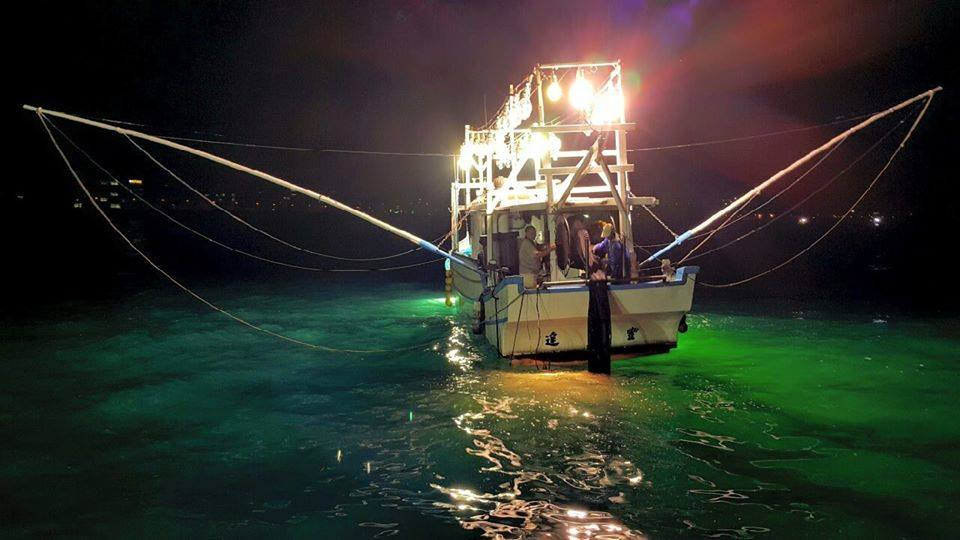
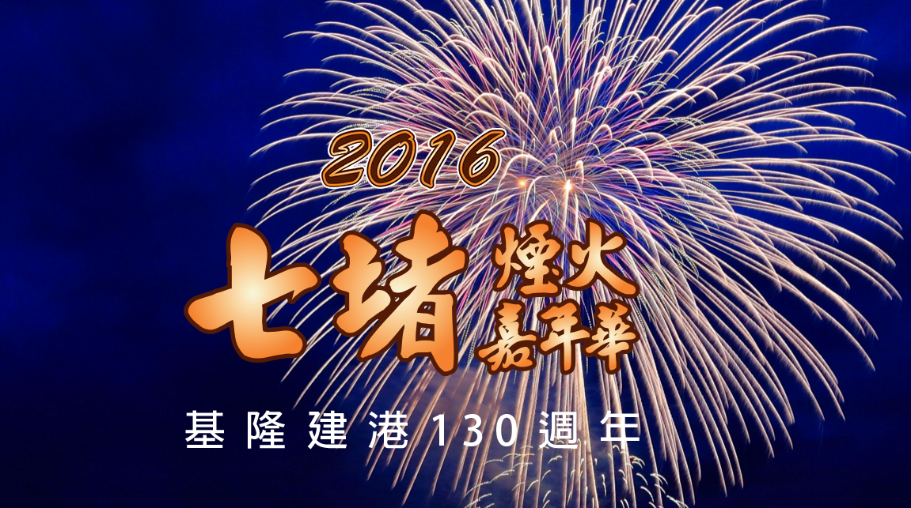
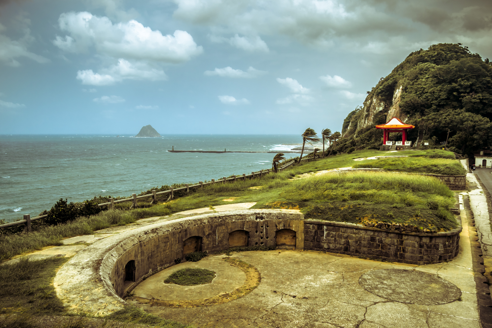
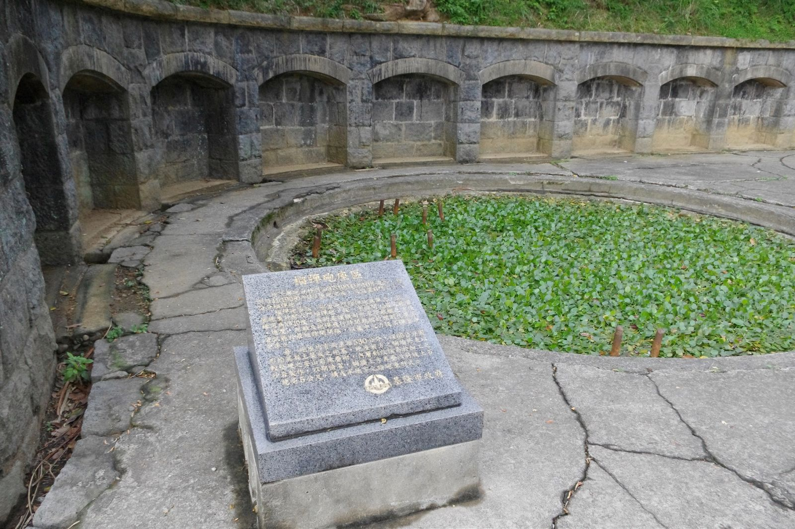
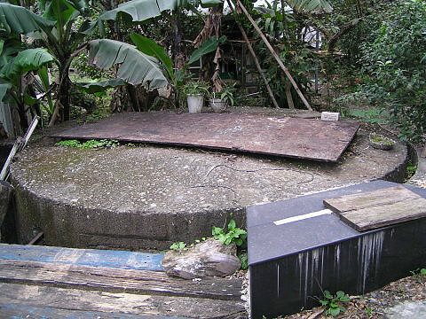
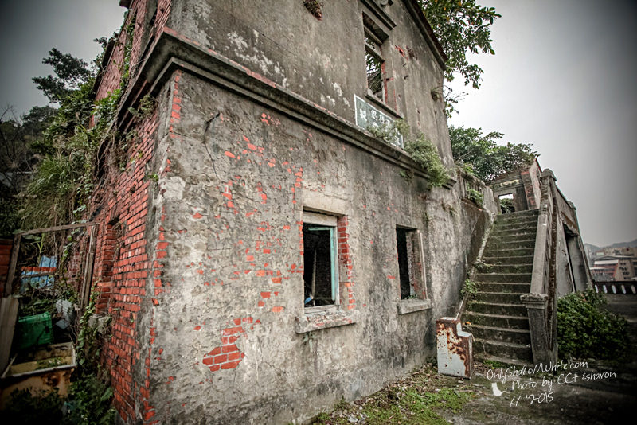

文化節慶
鷄籠中元祭

鷄籠中元祭起源於清朝，當時入墾基隆的福建漳州人與泉州安溪人，因為商業、土地、耕種、信仰等事摩擦，不斷發生械鬥死傷慘烈，後來雙方大老出面調解平息，將雙方死難骸骨合葬建廟祭祀，廟名「老大公廟」，並協商以字姓輪值和宗親血緣取代祖籍概念，輪流舉辦中元普渡，用比陣頭代替打破頭來促進社會和諧。
清代以迄日治時期，基隆中元祭典共有主會、主醮、主壇、主普，合稱為「四大柱」共同辦理，並以當地姓氏宗親輪流主普，昭和4年(公元1929年)還興建了主普壇。祭典最初由基隆港碼頭工會承接，後改由慶安宮辦理，民國96年(公元2007年)公告為基隆市民俗活動，後來並列為交通部觀光局「臺灣12大地方慶節」之一。
鎖管季
「海洋基隆」，一個依賴海洋，蘊育出多元海洋文化的城市，居民早期多數以捕魚維生，因此素以豐饒漁產富享盛名，尤其在每年的6至9月間，「鎖管」（俗稱「小卷」）自彭佳嶼東北方洄游至基隆附近海域，更成為基隆地區的主要漁獲。
根據官方漁業統計資料顯示，基隆市鎖管的產量達全台地區三分之一，年產值達1億元之多，可見基隆鎖管產能在漁業供給的舉足輕重；再者，鎖管具有成熟期短、產量多的生物特性，相較於其他漁業生物，屬於比較環保的水產品。
基於這些因素，基隆市政府將地方產業及休閒觀光資源加以整合及運用，鎖管季系列活動有漁村體驗營、夜訪鎖管、夜釣體驗及鎖管主題嘉年華等活動，透過這些活動舉辦的方式來行銷【基隆鎖管】的產業形象以打響基隆市的漁業物產特色。
基隆鐵道文化煙火節
鐵道文化煙火節的前身是基隆河煙火節,源自基隆河兩岸八德及富民里里民元宵煙火較勁之傳統活動, 從過往在基隆河兩岸居民互放鞭炮的傳統，再結合以往的鐵道文化展，演變至今已成為七堵地區的年度盛事,活動場地以七堵鐵道公園為核心。
東北角藝術節
「東北角藝術節」自2001年辦理至今，內容規畫除精選優質節目，更兼顧多元對象開發，增加觀眾進場觀賞節目人數，進而間接形成地方團隊彼此間良性競爭。
「東北角藝術節」除提升地方團隊藝術層面，更關注各年齡層的喜好。因此，薪傳歌仔戲劇團、基隆風動歌劇團，以活潑逗趣的肢體與對白，讓觀眾笑開懷並贏得掌聲。而故事工廠、笑大夫漫才集團、飛人集社、舞鈴劇場、讀演劇人等，更是針對年輕族群規畫不同類型表演節目。
由於近年市民對藝文發展積極投入與關注，採主題式和綜合性兩大主題，固定特別邀請國內外知名交響樂團，以及結合地方藝文創作空間的開發，將舞台延伸至砲台及戰爭紀念園區，以歷史建築為場景讓民眾走進歷史，感受主題式「環境藝術」。
歷史建築
白米甕砲台
白米甕砲台位於基隆港口兩岸，與東岸的砲台共同來扼住港口。清領時期以來的歷次對外戰爭，佔有舉足輕重的地位。砲台呈長形平面一字排開。可分為砲座區，指揮所及觀測站三個部份。指揮所位於砲座西側的小丘，觀測台則位於右側的山頂上。兩者都可以俯瞰基隆港，視野遼闊。在此觀海，可讓人心胸開朗。現在已成為市民來此運動、賞景、休閒的好去處。尤其夏天的晚上可以欣賞港口燈火，還有滿天星空和徐徐涼風。
彭佳嶼燈塔

民國前6年（西元1906年）興建的彭佳嶼燈塔，位於基隆外海彭佳嶼島上，為一圓形磚砌塔，外表為白色，透鏡為一等旋轉透鏡，為臺灣地區使用最大旋轉透鏡燈塔。彭佳嶼為一座火山島，彭佳嶼燈塔建在火山口，相當特殊。由於彭佳嶼燈塔目標醒目，二戰期間曾遭盟軍飛機轟炸達四次之多。
槓子寮砲台
槓子寮砲台是目前基隆最大且最完整的一座，位在基隆港東側，位在基隆槓子寮山上，槓子在凱達格蘭族語是陷阱的意思。
建於西元1903年，中日甲午戰爭後，台灣是日本統治，所以建於日本人之手。可以看到這邊的砲台都是一字型排開，砲可以360度旋轉，採用拋物線射擊。
這邊總共有六座榴彈砲砲台，還有一座平射炮台，因為位置隱密，屬於隱藏式的暗砲台。
八斗子清代官煤(主井、風坑)
「清國井」位於基隆八斗子，開鑿於清朝光緒年間（1876年），是全台灣第一口官煤，也是唯一的一口官煤，屬英式，特別處在於它是「直井」，非一般煤礦區為日式斜井。昔日，清國井風坑，為後來供應北部火力發電廠（現為海科館的主題館）淡水之水井，且風坑坑底留有清朝遺留下來的煤車。
許梓桑古厝(慶餘堂)
許梓桑古厝大約興建於西元1931年左右，為日治時代，台灣基隆地區聞人許梓桑所建之洋樓。許梓桑於日治時代曾任街庄長事務所書記、基隆街名譽助役等職，晚年鼓吹詩學，氣勢非凡並居住於名為「慶餘堂」廈屋，即現今許梓桑古厝，全棟採用日治時期所生產的「TR機器磚」砌築，為其特色，雖然依循著傳統閩南式建築風格，點綴有西洋式的建築細微之處，十分特別。目前無人居住，雜草紛多，不過殘留的古牆中，仍透露著早年大戶人家的氣勢。